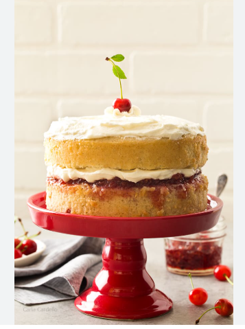
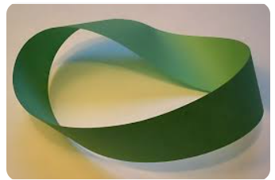
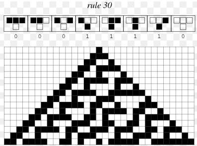
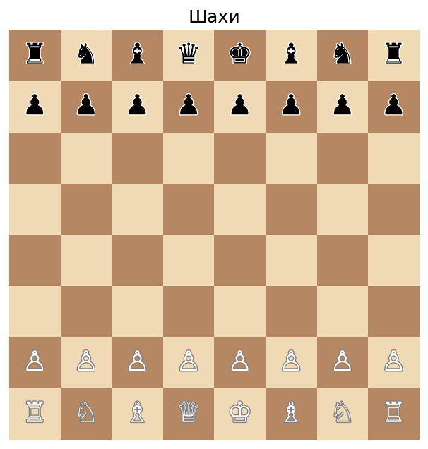
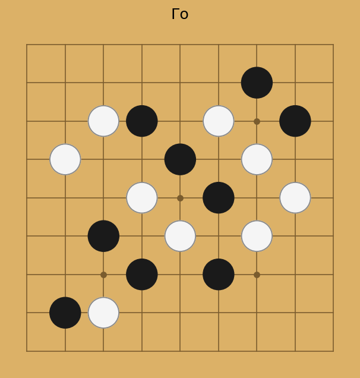
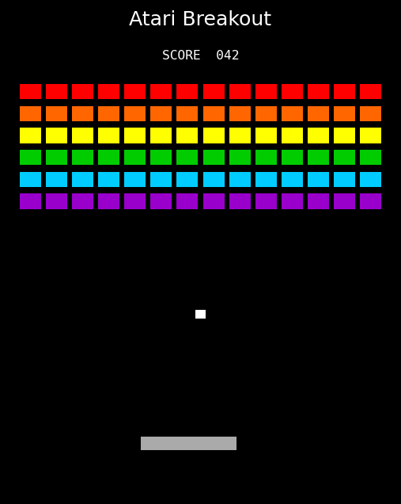

Раніше: лекції по різних підходах до ЗШІ
Зараз: лекції для практики
Орієнтовний план:
Технічне визначення (М. Гуттер)
ЗШІ - система, що досягає цілей в різних середовищах.
Ключовим є побудова ефективної моделі середовища.
Як оцінити складність середовища?
Що таке ефективна модель?

cake analogy
Гіпотеза Тюрінга (1950)
Якщо запрограмувати «дитячий розум» (tabula rasa) та надати йому можливість навчатися — можна отримати ЗШІ.
Проблема: вроджених структур значно більше, ніж вважав Тюрінг. Мозок — не чистий аркуш, а складна архітектура з багатьма індуктивними упередженнями (inductive biases). Приклади: (увага до обличчя з народження, страх висоти …)
Бінарний вектор довжини \(N\). Кількість станів: \(2^N\).
\[W_t = (w_0, w_1, \dots, w_{N-1}), \quad w_i \in \{0, 1\}\]
Час дискретний: \(t = 0, 1, 2, \dots\). Середовище статичне: \(W_{t+1} = W_t\) (пізніше ускладнимо).
Варіанти топології:
Лінійне — є два кінці; потрібно визначити граничні умови:
Кільце (ring) — \(r_{t+1} = (r_t+a) \mod N\), немає меж, вже у слайді
Стрічка Мьобіуса — кінці з’єднані з перекрутом

стрічка Мьобіуса
В момент часу \(t\) агент отримує сприйняття \(o_t\), яке залежить від поточного стану середовища \(W_t\) та позиції агента \(r_t\). \[o_t \in \{0, 1\}^M\]
Агент зчитує \(M\) сусідніх бітів навколо своєї позиції \(r_t\). Сприйняття зазвичай обмежене (\(M \ll N\)) і зашумлене \(o'_t = o_t \oplus \varepsilon, \quad \varepsilon \sim \text{Bern}(q)\).
\(\oplus\) це XOR (exclusive OR) оператор — для бінарних значень:
| \(o\) | \(\varepsilon\) | \(o \oplus \varepsilon\) |
|---|---|---|
| 0 | 0 | 0 |
| 0 | 1 | 1 |
| 1 | 0 | 1 |
| 1 | 1 | 0 |
У контексті шуму: \(\varepsilon \sim \text{Bern}(q)\) генерує випадковий біт, який дорівнює 1 з ймовірністю \(q\) (ймовірність інверсії). Коли \(\varepsilon = 1\), спостережуваний біт інвертується; коли \(\varepsilon = 0\), він залишається незмінним. Це стандартна модель для бінарного симетричного каналу шуму.
\(M_t \in \{0, 1\}^K\) — бінарний вектор, який оновлюється після кожного спостереження.
Характеристики:
1. Реконструкція середовища — точно запам’ятати \(W\): \[R_t = -\|\hat{W}_t - W_t\|_1 = -\sum_{i=0}^{N-1} |\hat{w}_i - w_i|\]
2. Exploration (дослідження) — відвідати невідомі позиції, зменшити невизначеність.
3. Передбачення — передбачити наступне сприйняття: \[R_t = -\|o_{t+1} - \hat{o}_{t+1}\|, \quad \hat{o}_{t+1} = g(M_t, a_t)\]
4. Пошук патерну — знайти позицію, де \(o_t = P\) для заданого патерну \(P \in \{0,1\}^M\): \[R_t = \mathbf{1}[o_t = P]\] (stringology: KMP, Boyer-Moore — \(O(N+M)\))
5. Найближчий патерн — знайти позицію з найменшою відстанню Гемінга до \(P\): \[R_t = -d_H(o_t, P) = -\sum_{j=0}^{M-1} o_t^j \oplus P^j\]
Реактивна — дія залежить лише від поточного сприйняття: \[\pi: o_t \mapsto a_t\]
З моделлю світу — дія залежить від внутрішнього стану моделі: \[\pi: (o_t, M_t) \mapsto a_t\]
З пам’яттю (історією) — дія залежить від усієї попередньої історії: \[\pi: (o_0, a_0, o_1, a_1, \dots, o_t) \mapsto a_t\]
У загальному випадку модель \(M_t\) є стиснутим представленням історії: \(M_t = f(M_{t-1}, o_t, a_{t-1})\)
Правило оновлення: стан кожної клітини \(w_i^{t+1}\) визначається трьома сусідами:
\[w_i^{t+1} = f(w_{i-1}^t,\; w_i^t,\; w_{i+1}^t)\]
Три сусіди → \(2^3 = 8\) можливих комбінацій →
\(2^8 = 256\) різних правил.

Правило 30
Вольфрам класифікував 256 правил за поведінкою у 4 класи:
| Клас | Поведінка | Приклад правил |
|---|---|---|
| I | Всі клітини → однорідний стан | 0, 255 |
| II | Стабільні або циклічні структури | 4, 108 |
| III | Хаотична, псевдовипадкова | 30, 45, 73 |
| IV | Складні локальні структури, на межі хаосу | 110, 54 |
Для агента: середовища класу IV — найцікавіші: достатньо складні, щоб навчатися, але не повністю випадкові.
1. Ентропія Шеннона (статистична складність): \[H(W) = -\hat{p}\log_2\hat{p} - (1-\hat{p})\log_2(1-\hat{p}), \quad \hat{p} = \tfrac{1}{N}\sum_{i=0}^{N-1} w_i\] Вимірює лише частку одиниць. Недолік: 01010101 і 00001111 мають однакову ентропію, хоча структурно різні.
2. Складність Колмогорова (алгоритмічна): \[K(W) = \min_{p:\; U(p) = W} |p|\] де \(U\) — універсальна машина Тюрінга, \(|p|\) — довжина програми в бітах. - \(K(0^N) = O(\log N)\) — “надрукуй \(N\) нулів” - \(K(\text{випадковий}) \approx N\) — не можна стиснути - Недолік: не обчислювана в загальному випадку
3. Стиснення (LZ-складність) — обчислювана апроксимація \(K(W)\): \[C(W) = \frac{|\text{compress}(W)|}{N} \in [0, 1]\] На практиці: gzip, zlib. \(C \approx 0\) для структурованих, \(C \approx 1\) для випадкових.
І ще інші міри …
Нехай одна клітина \(w_i\) змінюється з часом за невідомим розподілом: \[p(w_i = 1) = \theta, \quad \theta \in [0, 1]\]
Агент спостерігає послідовність \(w_i^0, w_i^1, w_i^2, \dots\) і будує модель \(q(\theta)\).
Ентропія клітини — невизначеність її стану: \[H(w_i) = -\theta\log_2\theta - (1-\theta)\log_2(1-\theta)\]
Максимальна при \(\theta = 0.5\) (1 біт), мінімальна при \(\theta \in \{0, 1\}\) (0 біт).
Модель агента — оцінка \(\hat{\theta}\) з \(T\) спостережень: \[\hat{\theta} = \frac{1}{T}\sum_{t=0}^{T-1} w_i^t\]
KL-дивергенція — якість моделі \(\hat{\theta}\) відносно реального \(\theta\): \[D_{\text{KL}}(p \| q) = \theta\log_2\frac{\theta}{\hat{\theta}} + (1-\theta)\log_2\frac{1-\theta}{1-\hat{\theta}} \geq 0\]
Кортеж \(\langle S, A, O, T, \Omega, R \rangle\):
| Символ | Загально | 1D бінарне |
|---|---|---|
| \(S\) | стани середовища | \((W_t, r_t) \in \{0,1\}^N \times \{0,\dots,N-1\}\) |
| \(A\) | дії агента | \(a_t \in \{-1, 0, +1\}\) |
| \(O\) | спостереження | \(o_t \in \{0,1\}^M\) |
| \(T\) | функція переходу | \(W_{t+1}{=}W_t,\; r_{t+1}{=}(r_t{+}a_t)\bmod N\) |
| \(\Omega\) | функція спостереження | \(o_t = W_t[r_t{-}\lfloor M/2\rfloor : r_t{+}\lfloor M/2\rfloor]\) |
| \(R\) | функція нагороди | \(-D_{\text{KL}}(p \| q_t)\) або \(-\|\hat{W}_t - W_t\|\) |
Стан агента включає модель світу: \[(o_t, M_t) \xrightarrow{\pi} a_t\]
Оновлення моделі: \[M_{t+1} = f(M_t,\; o_t,\; a_t)\]
Мета агента: \[\pi^* = \arg\max_\pi \mathbb{E}\left[\sum_{t=0}^{\infty} \gamma^t \cdot R(W_t, r_t, a_t)\right]\]
де \(\gamma \in [0,1)\) — коефіцієнт дисконтування.
Note
У нашому випадку: \(|S| = 2^N \cdot N\), \(|A| = 3\), \(|O| = 2^M\), причому \(M \ll N\) — часткова інформація.
| Середовище | \(S\) | \(A\) | \(O\) | \(R\) |
|---|---|---|---|---|
| Шахи | \(\sim 10^{47}\) позицій | \(\sim 30\) ходів | \(S\) (повна) | \(+1 / -1\) за результат |
| Го | \(\sim 10^{170}\) позицій | \(\sim 250\) ходів | \(S\) (повна) | \(+1 / -1\) за результат |
| Atari | RAM \(2^{1024}\) | 18 кнопок | Кадр \(84{\times}84\) | Ігровий рахунок |
| 1D бінарне | \(\{0,1\}^N \times \{0,\dots,N{-}1\}\) | \(\{-1,0,+1\}\) | \(\{0,1\}^M\), \(M{\ll}N\) | \(-\|\hat{W}_t - W_t\|_1\) |


